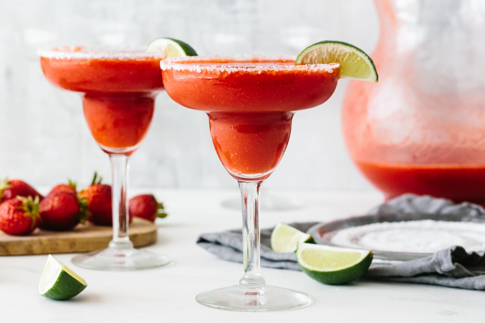

Margarita

Price: R90
Serving: 1
The simple mixture of tequila, triple sec and lime juice is often blended with ice but is traditionally served on the rocks. The cocktail is generally presented in a salt rimmed glass. Various fruity versions have been adapted from the traditional lime, such as raspberry, peach and strawberry.